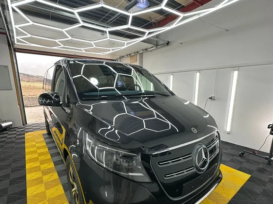
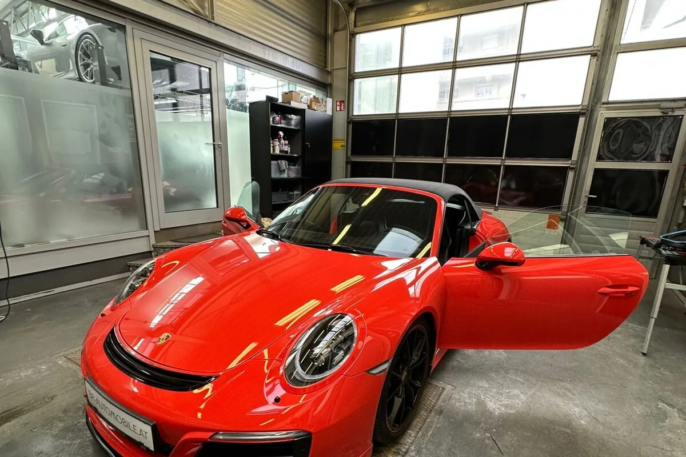
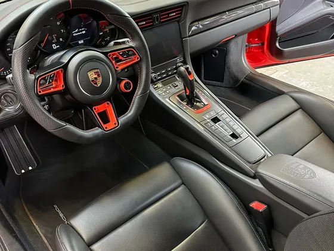
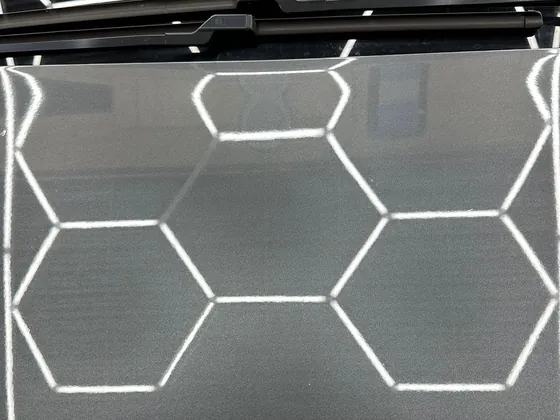
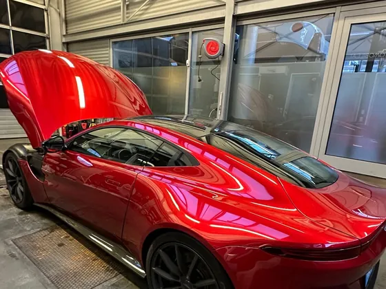

Außenreinigung
Vorwäsche, Schaum, Felgen mit Bürste und Pinsel, lackschonende Handwäsche und Keramiksprühversiegelung.
Pakete ansehenHandwäsche, Innenreinigung, Lackpolitur und Keramikversiegelung. Unsere Werkstatt liegt in Enzenreith, wenige Minuten vom Gloggnitzer Hauptplatz.

Vier Bereiche, einzeln oder kombiniert buchbar. Was Ihr Auto wirklich braucht, sehen wir beim Termin.

Vorwäsche, Schaum, Felgen mit Bürste und Pinsel, lackschonende Handwäsche und Keramiksprühversiegelung.
Pakete ansehen
Tiefenstaub mit der Tornador Gun, Teppiche, Polster, Armaturen, Türfalze und Kofferraum.
Innenreinigung
Lackdicke messen, zweistufig oder dreistufig polieren, Endkontrolle gegen Hologramme.
Lackpolitur
Bis zu 12 oder bis zu 60 Monate Schutz, immer auf vorbereitetem Lack. Danach perlt Wasser ab.
VersiegelungSie schreiben uns per WhatsApp oder rufen an. Ein Foto hilft. Antwort meist innerhalb einer Stunde, werktags.
Sie bringen das Fahrzeug nach Enzenreith oder wir holen es in Gloggnitz ab, ganz wie es Ihnen lieber ist.
Wir arbeiten das gebuchte Paket Schritt für Schritt ab und melden uns, wenn etwas mehr Aufwand braucht.
Sie bekommen Ihr Fahrzeug fertig zurück, inklusive Hinweisen zur Pflege.
Fördergasse 290, 2640 Enzenreith
Enzenreith grenzt direkt an Gloggnitz. Termine nach Vereinbarung, damit Ihr Fahrzeug sofort in Arbeit geht. Abholung und Rückbringung im Bezirk Neunkirchen sind inklusive, unter anderem in:
Dieselben Preise für alle Kunden, ob aus Gloggnitz, Neunkirchen oder vom Semmering. Keine Pauschalen, die sich erst nach der Besichtigung ändern.
| Paket | PKW | SUV / Kombi | Van |
|---|---|---|---|
| Spezial-Außen-Reinigung Außen · Paket 2 | € 49,- | € 69,- | € 99,- |
| Intensiv-Außen-Reinigung Außen · Paket 3 | € 199,- | € 299,- | € 399,- |
| Spezial-Innen-Reinigung Innen · Paket 4 | € 139,- | € 179,- | € 279,- |
| Intensiv-Innen-Reinigung Innen · Paket 5 | € 179,- | € 229,- | € 349,- |
| Glanzpolitur Politur · Paket 6 | € 399,- | € 499,- | € 599,- |
| Hochglanzpolitur Politur · Paket 7 | € 499,- | € 599,- | € 699,- |
| Versiegelung bis zu 12 Monate Versiegelung · Paket 8 | € 299,- | € 399,- | € 499,- |
| Versiegelung bis zu 60 Monate Versiegelung · Paket 9 | € 499,- | € 699,- | € 899,- |
| Premium-Paket nach Fahrzeugbesichtigung Premium · Paket 10 | ab € 1.499,- | nach Besichtigung | nach Besichtigung |
Alle Preise in EUR. Aufgrund der Kleinunternehmerregelung gemäß § 6 Abs. 1 Z 27 UStG wird keine Umsatzsteuer berechnet. Bei extremer Verschmutzung kann bei den Innen-Paketen ein Aufschlag von bis zu € 50,- dazukommen.
Unsere Werkstatt liegt in der Fördergasse 290 in 2640 Enzenreith, direkt neben Gloggnitz. Vom Gloggnitzer Hauptplatz sind Sie in wenigen Minuten bei uns. Termine vereinbaren wir vorab per WhatsApp oder Telefon, damit Ihr Fahrzeug sofort dran ist und Sie nicht warten müssen.
Ja. Die Abholung im Bezirk Neunkirchen ist inklusive, also auch in Gloggnitz, Schlöglmühl, Aue, Stuppach und Prigglitz. Wir holen Ihr Fahrzeug ab, bereiten es auf und bringen es Ihnen fertig zurück. Sie müssen dafür keinen halben Tag einplanen.
Die Preise gelten für alle Kunden gleich, unabhängig vom Wohnort. Eine Spezial-Außen-Reinigung beginnt bei € 49,- für den PKW, eine Spezial-Innen-Reinigung bei € 139,-. Die Glanzpolitur liegt bei € 399,-, eine Keramikversiegelung bei € 299,- oder € 499,- je nach Standzeit. Die vollständige Preisliste steht weiter oben auf dieser Seite.
Eine Außenreinigung dauert 1,5 bis 2,5 Stunden, eine Innenreinigung 2 bis 4 Stunden. Lackpolitur und Keramikversiegelung nehmen je nach Fahrzeug 4 bis 8 Stunden in Anspruch. Bei extremer Verschmutzung planen wir mehr Zeit ein und sagen Ihnen das vorher.
Ja. Jedes Paket ist einzeln buchbar. Sie können nur den Innenraum, nur die Außenreinigung, nur die Politur oder nur die Versiegelung beauftragen. Wir beraten Sie gerne, welches Paket für den Zustand Ihres Fahrzeugs sinnvoll ist.
Vom Kleinwagen über SUV und Kombi bis zum Van. Die Preise richten sich nach der Fahrzeugklasse, deshalb finden Sie in der Preisliste drei Spalten. Lack, Mattlack und folierte Fahrzeuge behandeln wir mit den jeweils passenden Produkten.
Mehr erfahren: Keramikversiegelung · Lackpolitur · Innenreinigung · Galerie · Autoaufbereitung Neunkirchen
Schreiben Sie uns kurz, welches Fahrzeug Sie haben und was Ihnen wichtig ist. Wir melden uns meist innerhalb einer Stunde mit einem Terminvorschlag.
Cornel Detailing · Fördergasse 290, 2640 Enzenreith · +43 676 4391253 · kontakt@corneldetailing.at